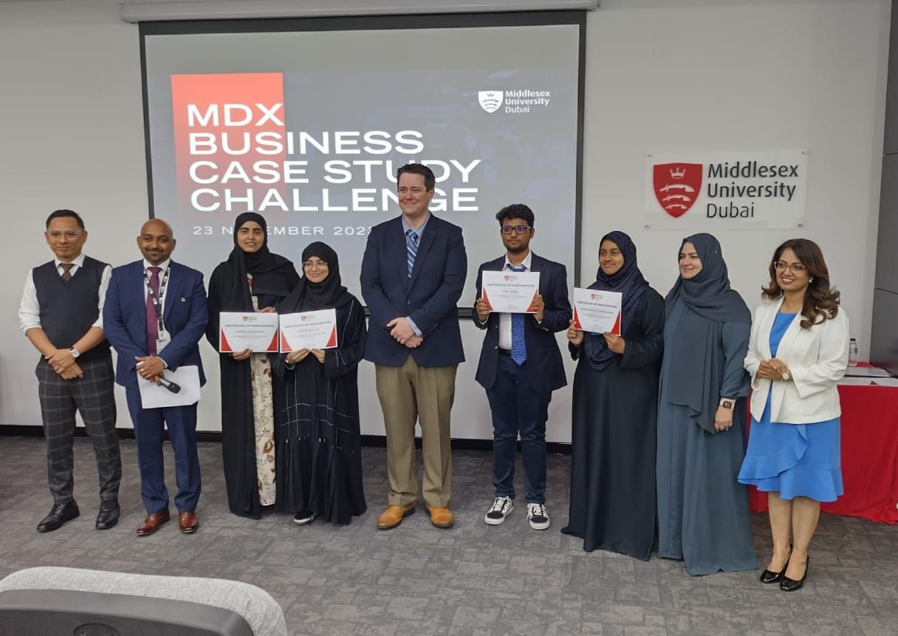
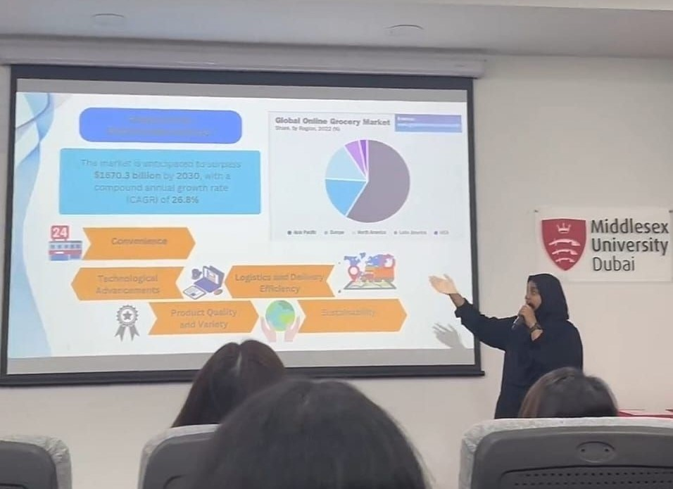

Inter-University Business Case Study Competition 2023 was organized by Middlesex University Dubai
I had participated in the Inter-Univeristy Business Case Study Competition with my teammates from the Engineering Department of
my university and got qualified to the finals.
The competition delved into various aspects of the Global Ecommerce Market, with special focus on the UAE.
The qualifying round had about 5 case study questions about the business and sustainability related aspects of the ecommerce and grocery market.
It required hours and days of research for us to arrive at our final answers and fortunately, it was worth the effort as we were one of the 5 teams
out of the 63 participated teams that got qualifiied for finals.
In the final round of the competition, we were provided with a similar set of 5 case study questions revolving around the business sector and
ecommerce market and we had to present our solutions through a well-put presentation and pitch ourselves in front of the judges.
It was in itself a huge honour to be a finalist of the Business Case Study Competition with no academic background in business.
It was truly a team effort as we sat day and night brainstorming and polishing our solutions.
This experience provided me with valuable insights into the dynamics of the Business World and the Ecommerce Market.
As an IT student, this journey has been an incredible learning experience for me, broadening my understanding of the business world and
the current trends.
Hajara Sabnam

Finalist in Inter-University Business Case Study Competition 2023

